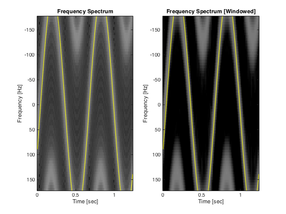
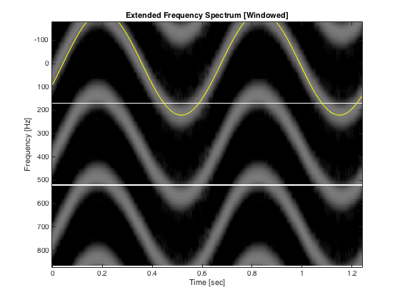
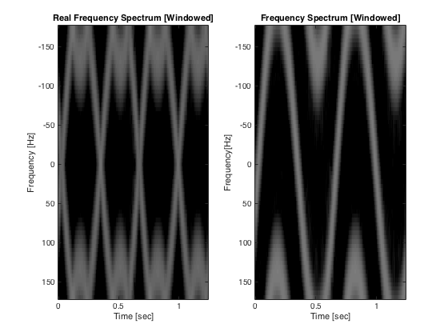
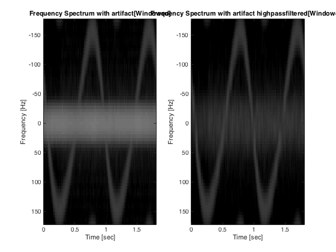

Exercise 9 TTK4165 Medical Signal Processing
Even Florenes Spring 2016
Contents
Documentation
Purpose: Script answering tasks given in exercise 9 in the course TTK4165 Medical Signal Processing
Related files: imagelog.m: Image a matrix of ultrasound power in log scale
Made by: Even Florenes NTNU 2016
Last changes: 2016-03-25 EF: First attempt on part 2,3 and 4
Status: In production
Part 2 Pulsed Wave Doppler w/ analytic velocity
load slowmotion % Find middle beam middleBeamIq = squeeze(iq(:,4,:)); frameRate = s.Framerate_fps; % nFrames/seconds nFrames = size(middleBeamIq,2); %nFrames nSamples = size(middleBeamIq,1); nSeconds = nFrames/frameRate; %seconds = (nFrames/(nFrames/seconds)) time = 0:nSeconds/(nFrames-1):nSeconds; distanceLength = s.iq.DepthIncrementIQ_m; distance = 0:distanceLength/(nSamples-1):distanceLength; % Find analytic velocity rotationPeriod=0.908; t0=0.0708; excenterDistance=0.67; pistonAngularFrequency = (2*pi*(time-t0))/rotationPeriod; pistonVelocityAmplitude = -(2*pi*excenterDistance)/rotationPeriod; pistonVelocity = pistonVelocityAmplitude*sin(pistonAngularFrequency); pointVelocity = -pistonVelocity; % Make Pulsed Wave Doppler Spectrum Nfft=64; %Zeropadding to length 64 crop=16; depthindex = round(size(middleBeamIq,1)/2); PHamming=zeros(Nfft, nFrames-crop+1); P=zeros(Nfft, nFrames-crop+1); for n=1:nFrames-crop+1, middleBeamIqFrames=middleBeamIq(depthindex,n+[0:crop-1])'; P(:,n) = mean(abs(fftshift(fft(middleBeamIqFrames,Nfft))),2); middleBeamIqFrames=middleBeamIqFrames.*(hamming(crop)*ones(1,length(depthindex))); PHamming(:,n)=mean(abs(fftshift(fft(middleBeamIqFrames,Nfft))),2); end; %Frequency axis frequencyAxis=(([0:Nfft-1]/Nfft)-0.5)*frameRate; %Greyscale image of frequency specter in dB gain = -25; dynamicRange = 40; timeAxis = 0:(1/frameRate)/(size(PHamming,2)-1):(1/frameRate); PHamming=imagelog(PHamming,gain,dynamicRange); P = imagelog(P,gain,dynamicRange); figure(1); % Plot image without windowing subplot(1,2,1),image(timeAxis,frequencyAxis,P),colormap(gray(64)); hold on subplot(1,2,1),plot(time,pointVelocity,'w'),title('Pulsed Wave Doppler Spectrum'),xlabel('Time [sec]'),... ylabel('Velocity [cm/s]'); % Plot image with hamming windowing subplot(1,2,2),image(timeAxis,frequencyAxis,PHamming),colormap(gray(64)); hold on subplot(1,2,2),plot(time,pointVelocity,'w'),title('Pulsed Wave Doppler Spectrum [Windowed]'),xlabel('Time [sec]'),... ylabel('Velocity [cm/s]');
Part 3 - Doppler shift and aliasing
load fastmotion.mat % Find middle beam iq middleBeamIq = squeeze(iq(:,4,:)); nFrames = size(middleBeamIq,2); %nFrames nSamples = size(middleBeamIq,1); nSeconds = nFrames/frameRate; %seconds = (nFrames/(nFrames/seconds)) time = 0:nSeconds/(nFrames-1):nSeconds; distanceLength = s.iq.DepthIncrementIQ_m; distance = 0:distanceLength/(nSamples-1):distanceLength; % From suggested solution exercise 8 x=[0.0419;0.356;0.675];y=[2.75;4.12;2.78]; excenterDistance=(y(2)-y(1))/2; rotationPeriod=x(3)-x(1); t0=x(1);%R in cm, T and t0 in seconds pistonAngularFrequency = (2*pi*(time-t0))/rotationPeriod; pistonVelocityAmplitude = -(2*pi*excenterDistance)/rotationPeriod; pistonVelocity = pistonVelocityAmplitude*sin(pistonAngularFrequency); pointVelocity = -pistonVelocity; % Make Pulsed Wave Doppler Spectrum Nfft=64; %Zeropadding to length 64 crop=16; depthindex = round(size(middleBeamIq,1)/2); PHamming=zeros(Nfft, nFrames-crop+1); P=zeros(Nfft, nFrames-crop+1); for n=1:nFrames-crop+1, middleBeamIqFrames=middleBeamIq(depthindex,n+[0:crop-1])'; P(:,n) = mean(abs(fftshift(fft(middleBeamIqFrames,Nfft))),2); middleBeamIqFrames=middleBeamIqFrames.*(hamming(crop)*ones(1,length(depthindex))); PHamming(:,n)=mean(abs(fftshift(fft(middleBeamIqFrames,Nfft))),2); end; %Frequency axis frequencyAxis=(([0:Nfft-1]/Nfft)-0.5)*frameRate; %Greyscale image of frequency specter in dB gain = -25; dynamicRange = 40; timeAxis = 0:(1/frameRate)/(size(PHamming,2)-1):(1/frameRate); PHamming=imagelog(PHamming,gain,dynamicRange); P = imagelog(P,gain,dynamicRange); figure(2); % Plot image without windowing subplot(1,2,1),image(timeAxis,frequencyAxis,P),colormap(gray(64)); hold on subplot(1,2,1),plot(time,pointVelocity,'w'),title('Pulsed Wave Doppler Spectrum'),xlabel('Time [sec]'),... ylabel('Velocity [cm/s]'); % Plot image with hamming windowing subplot(1,2,2),image(timeAxis,frequencyAxis,PHamming),colormap(gray(64)); hold on subplot(1,2,2),plot(time,pointVelocity,'w'),title('Pulsed Wave Doppler Spectrum [Windowed]'),xlabel('Time [sec]'),... ylabel('Velocity [cm/s]'); PExtended = [PHamming;PHamming;PHamming]; frequencyAxis=([0:Nfft-1]/Nfft)-0.5; frequencyAxisStacked=[frequencyAxis,-2*min(frequencyAxis)+frequencyAxis+1,-4*min(frequencyAxis)+frequencyAxis+1]; figure(3); image(timeAxis,frequencyAxisStacked,PExtended),colormap(gray(64)); hold on plot(time,pointVelocity,'w'),title('Extended Pulsed Wave Doppler Spectrum [Windowed]'),xlabel('Time [sec]'),... ylabel('Velocity[cm/s]'); 
Part 4 - Doppler sound
% Find middle sample iqSample = middleBeamIq(round(size(middleBeamIq,1)/2),:); % Extend sample, find real part, resample and rescale iqSampleExtended = [iqSample,iqSample,iqSample,iqSample]; realSample = real(iqSampleExtended); realSampleResampled = resample(realSample,8192,round(frameRate)); realSampleScaled = realSampleResampled/max(abs(realSampleResampled)); % Play hearable doppler frequency soundsc(realSampleScaled,8192,8); % Plot changes in time domain timeExtended = 0:time(end)*4/(size(realSample,2)-1):time(end)*4; figure(4); plot(timeExtended,realSample),xlabel('Time[sec]'),... title('Real part of extended sample'); % Image FFT of real sample PHamming=zeros(Nfft, nFrames-crop+1); for n=1:nFrames-crop+1, middleBeamIqFrames=middleBeamIq(depthindex,n+[0:crop-1])'; middleBeamIqFrames=middleBeamIqFrames.*(hamming(crop)*ones(1,length(depthindex))); PHamming(:,n)=mean(abs(fftshift(fft(real(middleBeamIqFrames),Nfft))),2); end timeAxis = 0:(1/frameRate)/(size(PHamming,2)-1):(1/frameRate); PHamming=imagelog(PHamming,gain,dynamicRange); figure(5),image(timeAxis,frequencyAxis,PHamming),colormap(gray(64)); title('Extended Real Pulsed Wave Doppler Spectrum [Windowed]'),xlabel('Time [sec]'),... ylabel('Velocity[cm/s]');
Part 5 - Clutter and clutter filter
load slowmotion_clutter % Find middle beam middleBeamIq = squeeze(iq(:,4,:)); frameRate = s.Framerate_fps; % nFrames/seconds nFrames = size(middleBeamIq,2); %nFrames nSamples = size(middleBeamIq,1); nSeconds = nFrames/frameRate; %seconds = (nFrames/(nFrames/seconds)) time = 0:nSeconds/(nFrames-1):nSeconds; distanceLength = s.iq.DepthIncrementIQ_m; distance = 0:distanceLength/(nSamples-1):distanceLength; % Find analytic velocity rotationPeriod=0.908; t0=0.0708; excenterDistance=0.67; pistonAngularFrequency = (2*pi*(time-t0))/rotationPeriod; pistonVelocityAmplitude = -(2*pi*excenterDistance)/rotationPeriod; pistonVelocity = pistonVelocityAmplitude*sin(pistonAngularFrequency); pointVelocity = -pistonVelocity; % Make Pulsed Wave Doppler Spectrum Nfft=64; %Zeropadding to length 64 crop=16; depthindex = round(size(middleBeamIq,1)/2); PHamming=zeros(Nfft, nFrames-crop+1); for n=1:nFrames-crop+1, middleBeamIqFrames=middleBeamIq(depthindex,n+[0:crop-1])'; middleBeamIqFrames=middleBeamIqFrames.*(hamming(crop)*ones(1,length(depthindex))); PHamming(:,n)=mean(abs(fftshift(fft(middleBeamIqFrames,Nfft))),2); end; %Frequency axis frequencyAxis=(([0:Nfft-1]/Nfft)-0.5)*frameRate; %Greyscale image of frequency specter in dB gain = -25; dynamicRange = 40; timeAxis = 0:(1/frameRate)/(size(PHamming,2)-1):(1/frameRate); PHamming=imagelog(PHamming,gain,dynamicRange); figure(6); % Plot image without windowing subplot(1,2,1),image(timeAxis,frequencyAxis,PHamming),colormap(gray(64)); hold on subplot(1,2,1),plot(time,pointVelocity,'w'),title('Doppler Spectrum with artifact[Windowed]'),xlabel('Time [sec]'),... ylabel('Velocity [cm/s]'); % Low pass filter nFilterCoefficients = 8; filterCoefficents=ones(1,nFilterCoefficients); %=boxcar(N). May also use hamming(N), hanning(N), .... filterCoefficents=filterCoefficents/sum(filterCoefficents); %Normalization of filter coefficients iqLowPassFiltered=filter(filterCoefficents,1,middleBeamIq,[],2); %Filter along rows iqHighPassFiltered=middleBeamIq-iqLowPassFiltered; %Subtract low pass component: % Make Pulsed Wave Doppler Spectrum Nfft=64; %Zeropadding to length 64 crop=16; depthindex = round(size(middleBeamIq,1)/2); PHamming=zeros(Nfft, nFrames-crop+1); for n=1:nFrames-crop+1, middleBeamIqFrames=iqHighPassFiltered(depthindex,n+[0:crop-1])'; middleBeamIqFrames=middleBeamIqFrames.*(hamming(crop)*ones(1,length(depthindex))); PHamming(:,n)=mean(abs(fftshift(fft(middleBeamIqFrames,Nfft))),2); end; %Frequency axis frequencyAxis=(([0:Nfft-1]/Nfft)-0.5)*frameRate; %Greyscale image of frequency specter in dB gain = -25; dynamicRange = 40; timeAxis = 0:(1/frameRate)/(size(PHamming,2)-1):(1/frameRate); PHamming=imagelog(PHamming,gain,dynamicRange); % Plot image without windowing figure(6); subplot(1,2,2),image(timeAxis,frequencyAxis,PHamming),colormap(gray(64)); hold on subplot(1,2,2),plot(time,pointVelocity,'w'),title('Doppler Spectrum with artifact highpassfiltered[Windowed]'),xlabel('Time [sec]'),... ylabel('Velocity [cm/s]'); % Make sound of filtered and unfiltered % Find middle sample iqSample = middleBeamIq(round(size(middleBeamIq,1)/2),:); iqSampleFiltered = iqHighPassFiltered(round(size(iqHighPassFiltered,1)/2),:); % Extend sample, find real part, resample and rescale iqSampleExtended = [iqSample,iqSample,iqSample,iqSample]; iqSampleExtendedFiltered = [iqSampleFiltered,iqSampleFiltered,iqSampleFiltered ,... iqSampleFiltered]; iqSamples = [iqSampleExtended;iqSampleExtendedFiltered]; for i = 1:size(iqSamples,1) realSample = real(iqSamples(i,:)); realSampleResampled = resample(realSample,8192,round(frameRate)); realSampleScaled = realSampleResampled/max(abs(realSampleResampled)); % Play hearable doppler frequency soundsc(realSampleScaled,8192,8); pause(10); end % for i
Part 6 - Blood flow measurement using Doppler
load Dopplerdata % Find middle beam middleBeamIq = iq; frameRate = s.Framerate_fps; % nFrames/seconds nFrames = size(middleBeamIq,2); %nFrames nSamples = size(middleBeamIq,1); nSeconds = nFrames/frameRate; %seconds = (nFrames/(nFrames/seconds)) time = 0:nSeconds/(nFrames-1):nSeconds; distanceLength = s.iq.DepthIncrementIQ_m; distance = 0:distanceLength/(nSamples-1):distanceLength; % Make Pulsed Wave Doppler Spectrum Nfft=256; %Zeropadding to length 64 crops=[8,16,32,64]; for i = 1:length(crops) crop = crops(i); depthindex = [70:80]; PHamming=zeros(Nfft, nFrames-crop+1); for n=1:nFrames-crop+1, middleBeamIqFrames=middleBeamIq(depthindex,n+[0:crop-1])'; middleBeamIqFrames=middleBeamIqFrames.*(hamming(crop)*ones(1,length(depthindex))); PHamming(:,n)=mean(abs(fftshift(fft(middleBeamIqFrames,Nfft))),2); end; %Frequency axis frequencyAxis=(([0:Nfft-1]/Nfft)-0.5)*frameRate; %Greyscale image of frequency specter in dB gain = -20; dynamicRange = 20; timeAxis = 0:(1/frameRate)/(size(PHamming,2)-1):(1/frameRate); PHamming=imagelog(PHamming,gain,dynamicRange); figure(7); plotTitle = ['Doppler spectrum of Doppler data, segment length:' num2str(crop)]; % Plot image without windowing subplot(length(crops),1,i),image(timeAxis,frequencyAxis,PHamming),colormap(gray(64)),... title(plotTitle),xlabel('Time [sec]'),... ylabel('Velocity [cm/s]'); end PHammingStacked = [PHamming;PHamming;PHamming]; frequencyAxisStacked=[frequencyAxis,-2*min(frequencyAxis)+frequencyAxis+1,-4*min(frequencyAxis)+frequencyAxis+1]; figure(8),image(timeAxis,frequencyAxisStacked,PHammingStacked),colormap(gray(64)),... title('Stacked Doppler spectrum of Doppler data, segment length: 64'),xlabel('Time[sec]'),... ylabel('Velocity [cm/s]');